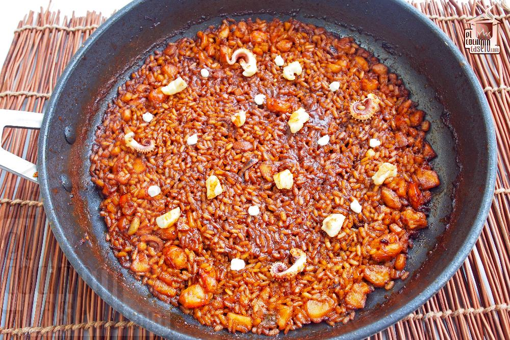

Receta arroz a banda

Ingredientes necesarios:
- 380 gramos de arroz bomba
- 1 sepia grande
- 400 gramos de gambas arroceras
- 1 cebolla
- 2 tomates medianos
- Sal
- Azafrán
- 1,2 litros de fumet de pescado
Proceso
- En una paella, pochamos la cebolla a fuego lento durante unos 10 minutos.
- Pasado ese tiempo agregamos el tomate pelado, sin pepitas y en dados. Rehogamos durante otros 15 minutos a fuego lento, que se haga bien.
- Incorporamos la sepia limpia cortada en dados y las gambas peladas. Cocinamos unos minutos. Ponemos un poco de sal, pero un toque, porque ya el fumet lo lleva y el propio pescado aporta sal.
- Agregamos el arroz y rehogamos con todo el conjunto unos 3 minutos.
- Cubrimos con el caldo de pescado y carabineros y dejamos cocinar 18 minutos, agregamos el azafrán o el colorante. Los primero 5 minutos a fuego fuerte y lo demás a fuego suave. Servimos en la mesa con alioli casero (opcional)